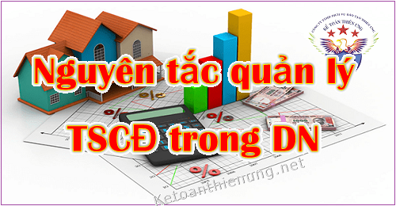

Các biện pháp quản lý Tài sản cố định trong Doanh nghiệp; Quy định về nguyên tắc quản lý tài sản cố định trong Công ty, quy trình quản lý TSCĐ, hồ sơ chứng từ, phân loại, theo dõi ... theo quy định tại Thông tư 45/2013/TT-BTC.
I. Điều kiện ghi nhận Tài sản cố định:
- Chắc chắn thu được lợi ích kinh tế trong tương lai từ việc sử dụng tài sản đó;
- Có thời gian sử dụng trên 1 năm trở lên;
- Nguyên giá tài sản phải từ 30.000.000 đồng trở lên.
Chi tiết xem thêm: Điều kiện ghi nhận Tài sản cố định
-------------------------------------------------------------------------
II. Nguyên tắc quản lý Tài sản cố định trong DN:Nguyên tắc quản lý tài sản cố định được quy định tại Điều 5 Thông tư 45/2013/TT-BTC, có 4 nguyên tắc cụ thể như sau:
1. Tất cả Tài sản cố định trong doanh nghiệp phải có bộ hồ sơ riêng gồm:
Biên bản giao nhận TSCĐ.
Hợp đồng mua bán.
Hoá đơn mua TSCĐ.
Và các chứng từ, giấy tờ khác có liên quan.
- Từng TSCĐ phải được phân loại, đánh số và có thẻ riêng, được theo dõi chi tiết theo từng đối tượng ghi TSCĐ và được phản ánh trong sổ theo dõi TSCĐ.
Xem thêm 1 số mẫu biểu, sổ sách, chứng từ kế toán TSCĐ:
=> Mẫu chứng từ kế toán TSCĐ. (Như: Biên bản giao nhận TSCĐ; Bản đăng ký phương pháp trích khấu hao; Bảng tính phân bổ; Biên bản kiểm kê; Biên bản đánh giá lại; Biên bản thanh lý... theo Thông tư 133 và 200)
=> Mẫu sổ theo dõi TSCĐ. (fiel mẫu Excel)
=> Mẫu sổ Tài sản cố định. (có hướng dẫn cách lập theo quy định)
=> Mẫu thẻ tài sản cố định. (có hướng dẫn cách lập theo quy định)
=> Mẫu chứng từ kế toán TSCĐ. (Như: Biên bản giao nhận TSCĐ; Bản đăng ký phương pháp trích khấu hao; Bảng tính phân bổ; Biên bản kiểm kê; Biên bản đánh giá lại; Biên bản thanh lý... theo Thông tư 133 và 200)
=> Mẫu sổ theo dõi TSCĐ. (fiel mẫu Excel)
=> Mẫu sổ Tài sản cố định. (có hướng dẫn cách lập theo quy định)
=> Mẫu thẻ tài sản cố định. (có hướng dẫn cách lập theo quy định)
-----------------------------------------------------------------------
| Giá trị còn lại trên sổ kế toán của TSCĐ | = | Nguyên giá của tài sản cố định | - | Số hao mòn luỹ kế của TSCĐ |
Trong đó:
Nguyên giá của Tài sản cố định:
- Nguyên giá tài sản cố định hữu hình là toàn bộ các chi phí mà doanh nghiệp phải bỏ ra để có tài sản cố định hữu hình tính đến thời điểm đưa tài sản đó vào trạng thái sẵn sàng sử dụng.
- Nguyên giá tài sản cố định vô hình là toàn bộ các chi phí mà doanh nghiệp phải bỏ ra để có tài sản cố định vô hình tính đến thời điểm đưa tài sản đó vào sử dụng theo dự tính.
Số hao mòn lũy kế của TSCĐ:
- Hao mòn tài sản cố định: là sự giảm dần giá trị sử dụng và giá trị của tài sản cố định do tham gia vào hoạt động sản xuất kinh doanh, do bào mòn của tự nhiên, do tiến bộ kỹ thuật... trong quá trình hoạt động của tài sản cố định.
- Giá trị hao mòn luỹ kế của tài sản cố định: là tổng cộng giá trị hao mòn của tài sản cố định tính đến thời điểm báo cáo.
--------------------------------------------------------------------
3. Đối với những TSCĐ không cần dùng, chờ thanh lý nhưng chưa hết khấu hao: -> DN phải thực hiện quản lý, theo dõi, bảo quản theo quy định hiện hành và trích khấu hao theo quy định tại Thông tư 45 này.Xem thêm: Thủ tục thanh lý tài sản cố định
-------------------------------------------------------------------------------
4. Doanh nghiệp phải thực hiện việc quản lý đối với những TSCĐ đã khấu hao hết nhưng vẫn tham gia vào hoạt động kinh doanh như những TSCĐ thông thường.
---------------------------------------------------------------------------------------------------
III. Cách Phân loại tài sản cố định của doanh nghiệp:
Căn cứ theo Điều 6 Thông tư 45/2013/TT-BTC và Khoản 2 Điều 1 Thông tư 147/2016/TT-BTC quy định Phân loại tài sản cố định của doanh nghiệp, cụ thể như sau:
- Căn cứ vào mục đích sử dụng của TSCĐ, doanh nghiệp tiến hành phân loại TSCĐ theo các chỉ tiêu sau:
- Tài sản cố định dùng cho mục đích kinh doanh là những TSCĐ do doanh nghiệp quản lý, sử dụng cho các mục đích kinh doanh của doanh nghiệp.
a) Đối với tài sản cố định hữu hình, doanh nghiệp phân loại như sau:
Loại 1: Nhà cửa, vật kiến trúc: là tài sản cố định của doanh nghiệp được hình thành sau quá trình thi công xây dựng như trụ sở làm việc, nhà kho, hàng rào, tháp nước, sân bãi, các công trình trang trí cho nhà cửa, đường xá, cầu cống, đường sắt, đường băng sân bay, cầu tầu, cầu cảng, ụ triền đà.
Loại 2: Máy móc, thiết bị: là toàn bộ các loại máy móc, thiết bị dùng trong hoạt động kinh doanh của doanh nghiệp như máy móc chuyên dùng, thiết bị công tác, giàn khoan trong lĩnh vực dầu khí, cần cẩu, dây chuyền công nghệ, những máy móc đơn lẻ.
Loại 3: Phương tiện vận tải, thiết bị truyền dẫn: là các loại phương tiện vận tải gồm phương tiện vận tải đường sắt, đường thủy, đường bộ, đường không, đường ống và các thiết bị truyền dẫn như hệ thống thông tin, hệ thống điện, đường ống nước, băng tải, ống dẫn khí.
Loại 4: Thiết bị, dụng cụ quản lý: là những thiết bị, dụng cụ dùng trong công tác quản lý hoạt động kinh doanh của doanh nghiệp như máy vi tính phục vụ quản lý, thiết bị điện tử, thiết bị, dụng cụ đo lường, kiểm tra chất lượng, máy hút ẩm, hút bụi, chống mối mọt.
Loại 5: Vườn cây lâu năm, súc vật làm việc và/hoặc cho sản phẩm: là các vườn cây lâu năm như vườn cà phê, vườn chè, vườn cao su, vườn cây ăn quả, thảm cỏ, thảm cây xanh...; súc vật làm việc và/hoặc cho sản phẩm như đàn voi, đàn ngựa, đàn trâu, đàn bò...
Loại 6: Các tài sản cố định là kết cấu hạ tầng, có giá trị lớn do Nhà nước đầu tư xây dựng từ nguồn ngân sách nhà nước giao cho các tổ chức kinh tế quản lý, khai thác, sử dụng:
- Tài sản cố định là máy móc thiết bị, dây chuyền sản xuất, tài sản được xây đúc bằng bê tông và bằng đất của các công trình trực tiếp phục vụ tưới nước, tiêu nước (như hồ, đập, kênh, mương); Máy bơm nước từ 8.000 m3/giờ trở lên cùng với vật kiến trúc để sử dụng vận hành công trình giao cho các công ty trách nhiệm hữu hạn một thành viên do Nhà nước sở hữu 100% vốn điều lệ làm nhiệm vụ quản lý, khai thác công trình thủy lợi để tổ chức sản xuất kinh doanh cung ứng dịch vụ công ích;
- Tài sản cố định là công trình kết cấu, hạ tầng khu công nghiệp do Nhà nước đầu tư để sử dụng chung của khu công nghiệp như: Đường nội bộ, thảm cỏ, cây xanh, hệ thống chiếu sáng, hệ thống thoát nước và xử lý nước thải...;
- Tài sản cố định là hạ tầng đường sắt, đường sắt đô thị (đường hầm, kết cấu trên cao, đường ray...).
Loại 7: Các loại tài sản cố định khác: là toàn bộ các tài sản cố định khác chưa liệt kê vào sáu loại trên.
b) Tài sản cố định vô hình: quyền sử dụng đất theo quy định tại điểm đ khoản 2 Điều 4 Thông tư 45, quyền phát hành, bằng sáng chế phát minh, tác phẩm văn học, nghệ thuật, khoa học, sản phẩm, kết quả của cuộc biểu diễn nghệ thuật, bản ghi âm, ghi hình, chương trình phát sóng, tín hiệu vệ tinh mang chương trình được mã hoá, kiểu dáng công nghiệp, thiết kế bố trí mạch tích hợp bán dẫn, bí mật kinh doanh, nhãn hiệu, tên thương mại và chỉ dẫn địa lý, giống cây trồng và vật liệu nhân giống.
----------------------------------------------------------------------------
Kế toán Diệu Tâm xin chúc các bạn thành công!
Kế toán Diệu Tâm xin chúc các bạn thành công!
__________________________________________________
